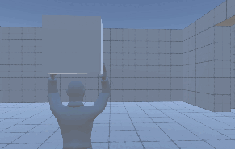

March 2023 Update
Since the last update more than 3 years ago, there have been a lot of new features added and improvements made to make development more sustainable.
Automated Testing
- Testing Additions - As of today, there are 961 automated tests.
- Test Coverage - There was previously no tests because this was "just a personal project". However, as the amount of code grew, it became obvious that automated testing was required for progress to be made. Tst coverage has been increased from 0% -> 35.5%. Which is still not ideal coverage, but better than nothing.
- Test Driven Development Employed - In order to further improve the test coverage, Test-Drivern Development is continuosly being
- CI/CD Pipelines - To ensure the tests are passing, CI/CD pipelines were created.
Item Interactions

Items can be picked up.
Items can be thrown.
Players can preview the trajectory of their item